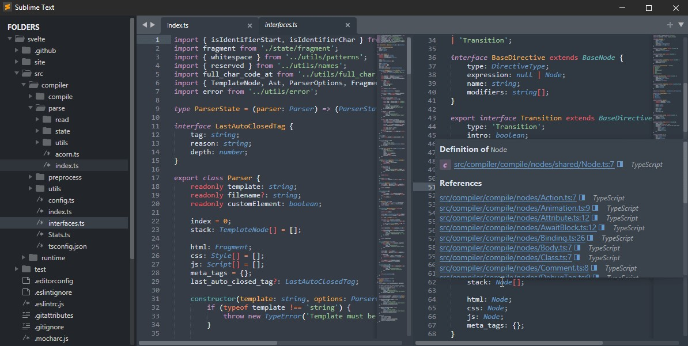
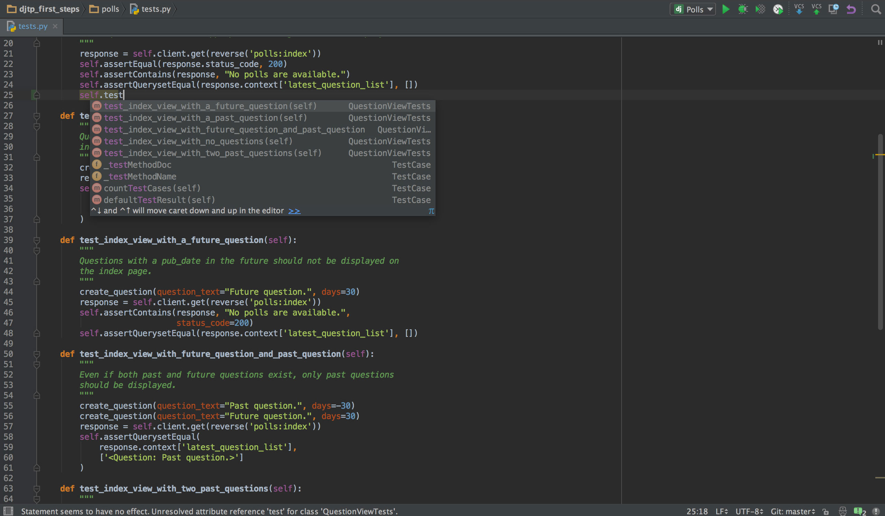
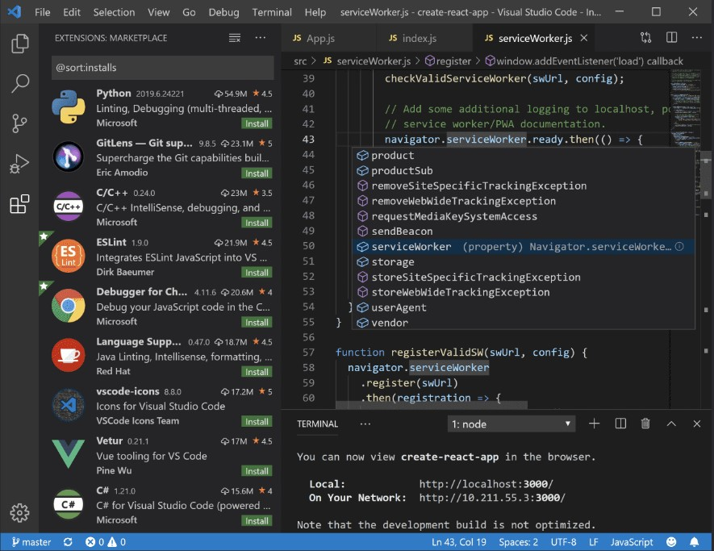

Chapter 3: Using text editors and IDEs#
Although Python can be used directly from a terminal like the Windows PowerShell, in many cases the programs can get so long and complex that the use of a text editor is necessary. Even if the program is not too long in extension, using a text editor can come in handy in many cases.
In this article you are going to see how to run Python programs written in text editors, and which editors are the most common in the industry.
Notepad#
The first text editor you can try is one of the most common and popular in Windows: Notepad. This text editor is installed in Windows by default, so you don’t need to install any extra software for this case. Go ahead and open the Notepad software. Let’s also open the Windows PowerShell too, because the terminal is needed to execute the program you will write in the text editor.
In Notepad, write some Python code to test. I will just write 1+1 to start testing something really simple.
1+1
Let’s save the file and give it a name. For example you can give the file a name like firstPythonProgram.txt. Note that the extension .txt is the default when working with notepad. But in order for Python to be able to run the program, the file needs to have a different file extension. In the case of Python programs the extension is .py, so the file should be named as firstPythonProgram.py. You can save the file on the Desktop or inside a new folder named DeusDevExercises, or the name you wish.
Changing file extensions on Windows. Changing a file extension on Windows is not trivial, specially if you don’t have much experience working with computer programs. If you don’t know how to change the file extension in Windows you can read this article.
To run the program you wrote on the text file, go to the terminal and write python followed by the name of the file. This will not open the Python interpreter like it used to when writing just python. This command will instead execute the program written in the file. Open a Windows PowerShell (terminal) and run the following:
PS C:\Users\youruser> cd Desktop/DeusDevExercises
PS C:\Users\youruser\Desktop\DeusDevExercises> python firstPythonProgram.py
PS C:\Users\youruser\Desktop\DeusDevExercises>
First you need to change directory to where the text file is located. Use the cd (change directory) command to move to a different directory, for example Desktop/DeusDevExercises if you created the folder in the Desktop (it is possible that you need to look for a folder named OneDrive before Desktop depending on the version of Windows).
As you can see, after running python firstPythonProgram.py nothing happened. This is because working with files is different than working directly on the Python interpreter. With the Python interpreter the output is shown automatically, but when working with files you have to explicitly tell the script to print the output to the screen.
This is where the print() function comes in. Edit the Python file to look like the following:
print(1+1)
Execute the script again in PowerShell, and you will see the output printed on the screen.
PS C:\Users\youruser\Desktop\DeusDevExercises> python firstPythonProgram.py
2
Amazing! Let’s write a more complex script, using a variable to print a custom message with your own name:
myName = 'Carlos'
print('Hello ' + myName)
Run the script on the terminal:
PS C:\Users\youruser\Desktop\DeusDevExercises> python firstPythonProgram.py
Hello Carlos
As you can see the scripts are working as expected. This way of working with programs is very helpful in case you need to edit the variable myName for example. You only need to edit that line and the rest of the script remains unchanged.
You can use Notepad for all your programs, but there are other excellent editors that are specifically designed to work with different programming languages like Python. These are called IDEs.
What is an Integrated Development Environment (IDE)?#
An Integrated Development Environment (IDE) is a software application specifically designed to work in software development. An IDE usually has different features which makes coding easier, and that other common text editors like Notepad doesn’t.
IDEs consist of some sort of text editor, building automation and debuggers. Some IDEs include extra features like syntax highlighting (colored code), autocomplete, specific code language integration, and many more.
You will learn all of this concepts along the way. For now let’s see some examples of popular IDEs and try to pick one or two to keep working with Python.
Sublime Text#

Fig. 6 Sublime text editor#
Sublime text is a text editor similar to Notepad. It has many features that help developers code in a more comfortable way. Some of them are:
Files and folder organization: you can open multiple files, and even a complete folder with files and subfolders inside of it.
Colored code according to the language: sublime has many different color combinations to improve code readability based on the programming language used (Python, C, Ruby, etc).
Packages: you can use different packages or plugins to make your sublime text editor more customizable.
PyCharm (by JetBrains)#

Fig. 7 PyCharm text editor#
Another very popular IDE is PyCharm. This IDE is specific for Python, which makes it a very good choice if you intend to work solely with this programming language. Some key of its features are:
Syntax highlighting to improve code readability.
Intelligent code autocompletion and suggestions.
Folder and files structure for ease of navigation.
Visual Studio Code (VS Code)#

Fig. 8 VS Code text editor#
One of the most popular and used code editors is VS Code. This code editor has many features that makes working with code a lot easier compared with common text editors like Notepad. Some of them are:
Files and folder organization (similar to Sublime and PyCharm)
Colored code according to language (similar to Sublime and PyCharm)
VS Code works with something called extensions. For example, you can download the Python extension when working with Python programs.
Customization: you can customize the editor to your needs, being the layout, colors and more.
IntelliSense: VS Code has autocomplete and suggestions that makes coding very easy and faster.
Integrated terminal. You can run your Python code directly from the IDE.
Which text editor should I use?#
There are many options to choose from. I have given only three with some detail, but you can search for others and see which one fits your needs and likes better.
Other popular options are: IDLE, Jupyter Notebook, Atom, Spyder, Thonny, Vim, etc.
I can recommend you to try at least three options so you can see for yourself which code editor you feel more comfortable with.
Conclusion#
In this article you learned how to work with text editors and IDEs. Writing your Python code in a text editor is a great practice for your future projects. Keep practicing!